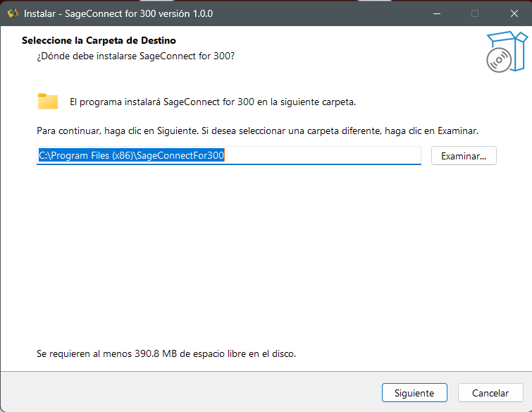
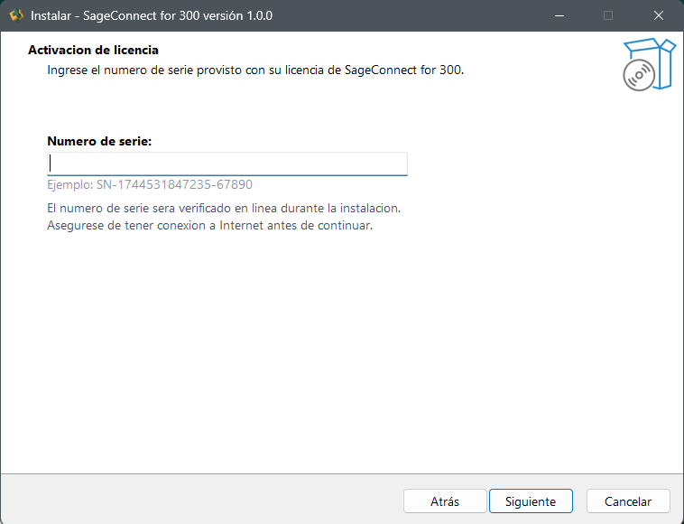
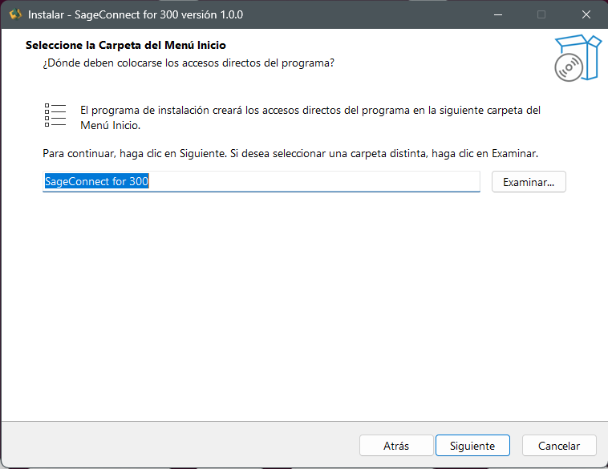
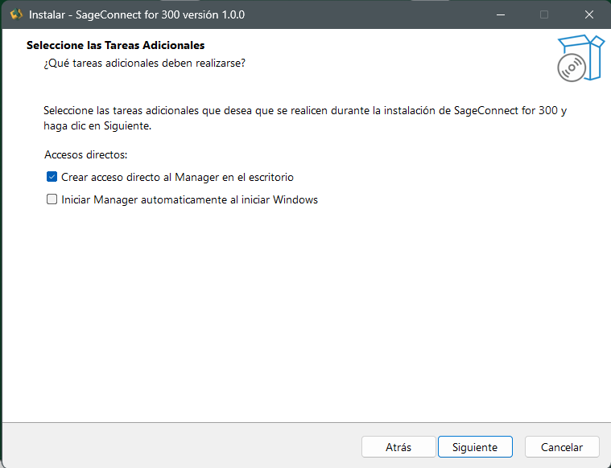
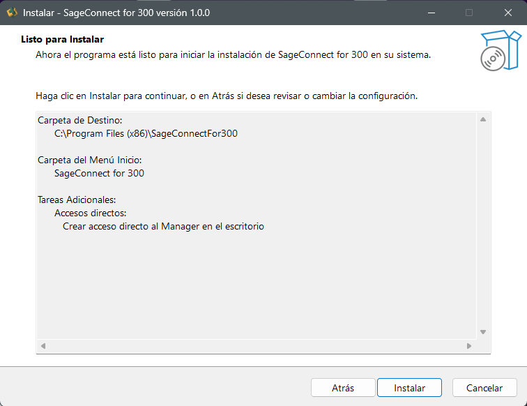
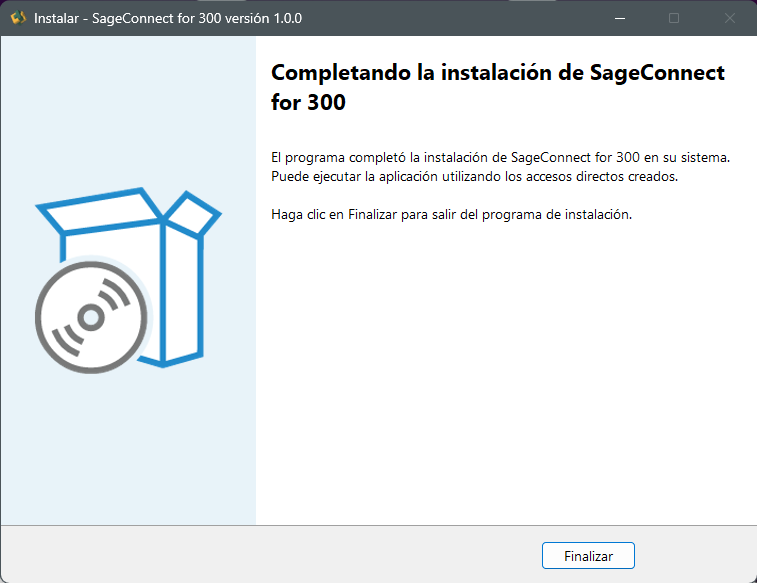

🚀 Proceso de instalación
El instalador guía al usuario a través de seis pantallas para completar la instalación de Sage Connect for 300. A continuación se describe cada paso.
1. Selección de la carpeta de destino
El primer paso consiste en elegir la carpeta donde se instalará Sage Connect for 300. Por defecto el instalador propone:
C:\Program Files (x86)\SageConnectFor300Puede modificarse usando el botón Examinar…. El asistente también informa que se requieren al menos 390.8 MB de espacio libre en disco.

2. Activación de licencia
En esta pantalla se solicita el número de serie provisto con la licencia
de Sage Connect for 300 (formato SN-XXXXXXXXXXXXX-XXXXX).
⚠️ Importante: El número de serie se valida en línea, por lo que es indispensable contar con conexión a Internet antes de continuar.

3. Carpeta del menú Inicio
Permite definir la carpeta del Menú Inicio donde se crearán los accesos directos del programa. Por defecto se propone:
SageConnect for 300Puede personalizarse mediante el botón Examinar….

4. Tareas adicionales
Permite configurar dos acciones complementarias durante la instalación:
- ✅ Crear acceso directo al Manager en el escritorio (activado por defecto)
- ⬜ Iniciar Manager automáticamente al iniciar Windows (opcional)

5. Listo para instalar
Pantalla de resumen con toda la configuración previa:
| Sección | Valor |
|---|---|
| Carpeta de destino | C:\Program Files (x86)\SageConnectFor300 |
| Carpeta del menú Inicio | SageConnect for 300 |
| Tareas adicionales | Crear acceso directo al Manager en el escritorio |
Al hacer clic en Instalar comienza la copia de archivos al equipo.

6. Instalación completada
Pantalla final que confirma que SageConnect for 300 se instaló correctamente. Puede ejecutarse la aplicación mediante los accesos directos creados. El botón Finalizar cierra el asistente.

💡 Siguiente paso: Continúa con Acceso a la aplicación para abrir el Manager por primera vez.